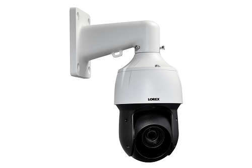

CCTV (Closed-Circuit Television) adalah system televisi berbasis kamera video yang mengirimkan sinyal tertutup (private) untuk memantau dan merekam aktivitas suatu area secara real-time maupun data video yang bisa di tinjau kembali di sebuah monitor.
Penggunaan CCTV umumnya adalah untuk tujuan keamanan. CCTV diciptakan untuk mempermudah pengawasan untuk suatu area agar tidak memerlukan operator untuk mengawasi suatu area secara manual.
Dengan adanya CCTV kita bisa memantau dan mengawasi suatu area 24/7 secara otomatis tanpa perlu ada petugas yang berjaga.
karena system CCTV yang dapat merekam suatu kejadian secara real-time, kita juga bisa melihat suatu kejadian yang telah terlewat atau tidak terpantau oleh penjaga di suatu area karna CCTV bisa merekam semua kejadian yang terpantau. Dengan adanya data video yang tersimpan pada system CCTV yang nantinya data video tersebut bisa di jadikan bukti kuat atas kejadian tertentu.
Pengawasan menggunakan CCTV umum digunakan pada berbagai tempat publik, seperti perusahaan, toko, sekolah, restoran, bahkan pada rumah.
Fungsi CCTV
CCTV berfungsi untuk melakukan pengawasan pada suatu area, biasanya untuk tujuan keamanan, adanya CCTV pada area tertentu dapat mencegah terjadinya tindak kriminal.
Dengan system CCTV yang dapat melakukan rekaman secara real-time mengenai suatu kejadian, rekaman CCTV dapat menjadi bukti saat terjadi suatu kejahatan, membantu melacak dan mengkonfirmasi pelaku, dan sebagainya.
Kamera CCTV juga banyak digunakan untuk memonitor lalu lintas kendaraan serta mengintai arus transportasi, terutama pada jalan yang rawan kecelakaan.
Cara Kerja CCTV
Cara kerja CCTV berbeda tergantung jenis kamera yang digunakan.
Contohnya kamera CCTV jenis analog memerlukan memori untuk menyimpan rekaman video, sedangkan, kamera CCTV IP sudah terhubung ke internet sehingga penyimpanan video terjadi secara otomatis ke sistem cloud tanpa memerlukan memori.
Jenis CCTV
CCTV Analog

Kamera pada CCTV analog merupakan teknologi lama yang bekerja dengan cara manual, yaitu menyimpan video yang terekam ke memori.
CCTV analog memiliki sistem yang lebih sederhana dan harga yang lebih terjangkau.
Kelebihan CCTV analog adalah Instalasi lebih sederhana, penempatan perangkat bisa sampai 1km dari monitor, harga lebih terjangkau.
Kekurangan CCTV analog adalah video yang tersimpan rawan hilang karena bisa dicuri.
Sistem CCTV terdiri dari sejumlah instrumen yang bekerjasama untuk melakukan pengawasan, yaitu:
CCTV IP Camera

CCTV dengan IP Camera merupakan teknologi baru yang memiliki keunggulan dari segi penyimpanan yang fleksibel.
Kelebihan CCTV IP Camera adalah bisa terkoneksi ke internet, sehingga video disimpan secara lebih aman tanpa risiko hilang akibat dicuri, rekaman dengan gambar yang lebih jelas karena kamera memiliki resolusi yang lebih tinggi.
Kekurangan CCTV IP Camera adalah memiliki harga yang lebih mahal dibandingkan CCTV analog, penempatan perangkat max 80m dari monitor (bisa lebih dengan tambahan perangkat lain) yang membuat IP Camera lebih rumit dari CCTV analog.
Sistem CCTV terdiri dari sejumlah instrumen yang bekerjasama untuk melakukan pengawasan, yaitu:
CCTV Wireless

CCTV wireless (Closed-Circuit Television wireless) adalah sistem pengawasan video yang menggunakan teknologi nirkabel untuk mengirimkan sinyal video dari kamera ke perangkat penerima, seperti monitor atau penyimpanan data.
Kelebihan CCTV Wireless adalah tidak perlu menggunakan kabel panjang seperti CCTV pada umumnya, sehingga pemasangannya lebih mudah. Selain itu, kamera ini memungkinkan pengguna memantau area yang sulit dijangkau dengan kabel yang sangat panjang, seperti luar rumah, garasi, atau atap, sehingga CCTV wireless lebih sederhana dari CCTV jenis lainnya.
Kekurangan CCTV Wireless adalah terbackup wifi dengan internet yang stabil.
Sistem CCTV terdiri dari sejumlah instrumen yang bekerjasama untuk melakukan pengawasan, yaitu:
CCTV PTZ
CCTV PTZ adalah singkatan dari pan, tilt, zoom adalah Pan tilt zoom camera (PTZ) ada di semua jenis lainnya, yang membedakannya hanya camera PTZ bisa bergerak ke kanan kiri (pan), naik turun (tilt) dan melakukan fungsi zoom.
Kekurangan CCTV PTZ adalah dikarenakan camera jenis ini memiliki fitur lengkap, alhasil harganya jauh lebih mahal dari camera jenis lainnya
Kesimpulan
CCTV dapat membantu anda untuk mengawasi dan memantau semua aktivitas di sekitar bangunan anda, dengan adanya CCTV anda bisa menjamin keamanan sekitar bangunan kapanpun dan dimanapun anda berada, meminimalisir tindak kriminal yang kerap terjadi di tempat-tempat rawan kejahatan.
Perlu di perhatikan, saat anda ingin memasang CCTV anda harus paham mengenai kebutuhan yang di perlukan seperti, penempatan perangkat, jenis CCTV yang relevan sesuai kebutuhan, supaya CCTV yang dipasang optimal dalam melakukan tugasnya tanpa mengeluarkan bugdet yang berlebih untuk sekedar pengamanan yang sederhana tapi hasil yang optimal.